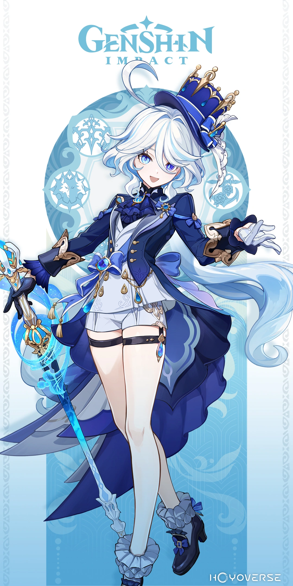
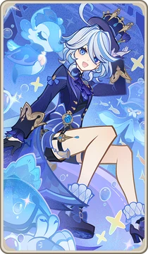
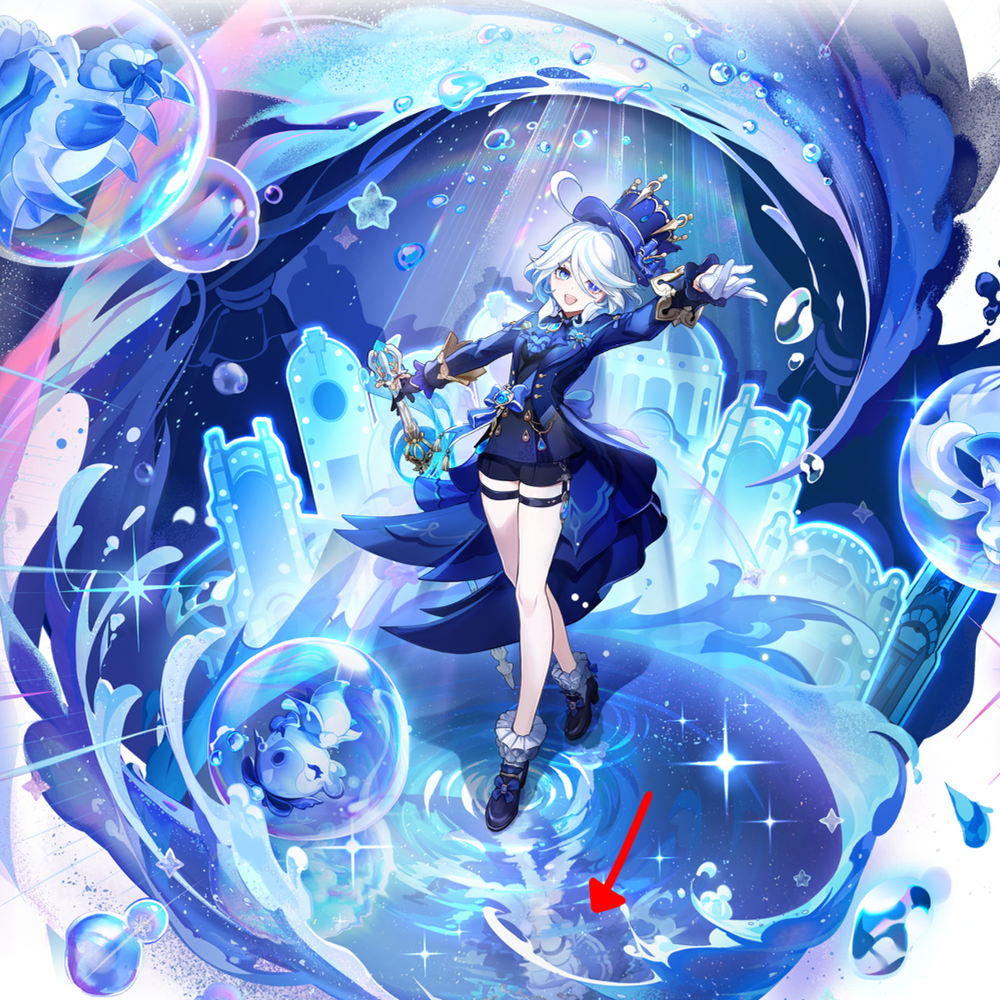
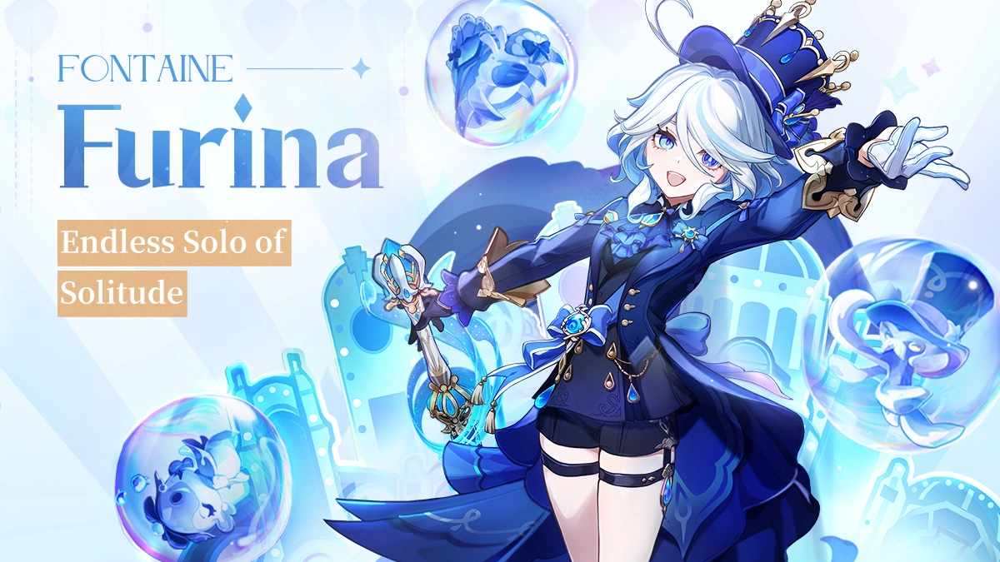

Furina




Basic Information
Full Name: Furina de Fontaine
Vision: Hydro
Nation: Fontaine
Voice Actors: Inori Minase (JP), Qian Chen (CN)
Furina is the Hydro Archon, famous for her dramatic personality and strong presence in Fontaine.
Abilities
NA: Performs Hydro-infused attacks.
Skill: Summons companions to fight.
Ultimate: Deals large AoE Hydro DMG and buffs allies.
Talents: Improves party HP and healing scaling.
Constellation
- C1: Extends skill duration.
- C2: Boosts healing capabilities.
- C4: Grants additional Hydro buffs.
- C6: Major DPS increase with Hydro attacks.
Summary
Furina is a strong Hydro support and sub-DPS. Recommended for players wanting unique mechanics.